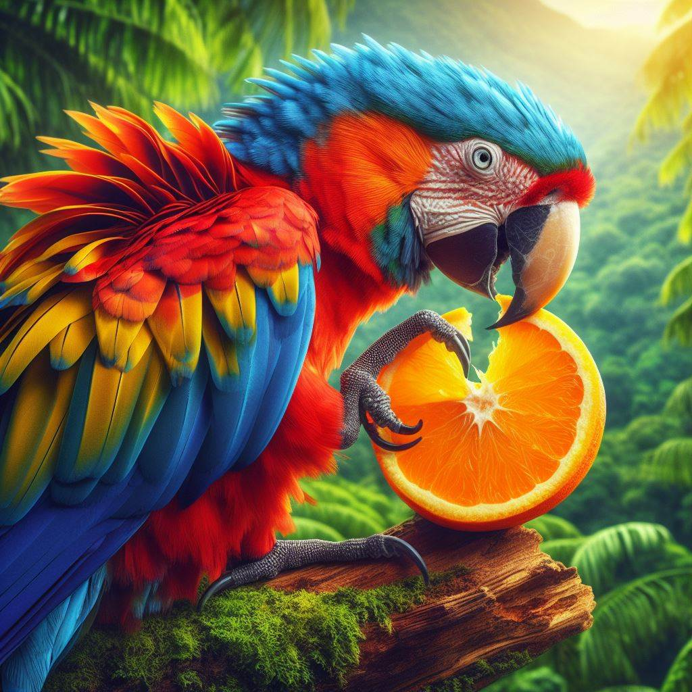

Description

Parrots are colorful birds known for their intelligence, vocal abilities, and vibrant plumage. They belong to the family Psittacidae and come in various species.
Habitat
Parrots are found in tropical and subtropical regions worldwide, including rainforests, savannas, and mangroves. They are also popular as pet birds.
Diet
Parrots primarily eat seeds, nuts, fruits, and nectar. Some species have specialized diets, such as the New Zealand kaka, which feeds on sap and honeydew.
Behavior
Parrots are highly social birds that often live in flocks. They are known for their vocal mimicry and ability to communicate with humans.
Adaptations
Parrots possess strong, curved beaks for cracking nuts and seeds. Their zygodactyl feet (two toes forward, two toes backward) aid in climbing and manipulating objects.
Conservation Status
Parrots face threats from habitat destruction and the illegal pet trade. Conservation efforts focus on protecting their natural habitats and regulating trade.
Cultural Significance
Parrots hold cultural significance in many societies and are often associated with exotic beauty. They are also popular pets due to their intelligence and interactive nature.
Interesting Facts
- Parrots have a keen ability to mimic human speech and other sounds. - They are among the most intelligent bird species, capable of problem-solving and tool use. - Parrots are long-lived birds, with some species living for several decades.
Research and Studies
- Sensory Adaptations
- Vision: Parrots have excellent vision and are known for their ability to see a wide range of colors, which aids in foraging and mate selection. They have good depth perception and can judge distances accurately.
- Hearing: Parrots have a keen sense of hearing, allowing them to imitate a variety of sounds, including human speech and other bird calls. This ability is used for communication within their flocks.
- Flight and Behavior
- Parrots have strong flight capabilities, with a swift and direct flight pattern. They use their wings to maneuver quickly through their natural habitats, such as rainforests and woodlands.
- Known for their vibrant plumage and playful behavior, parrots are highly social birds that form strong bonds with their companions and can often be seen engaging in group activities.
- Ecology and Behavior
- Diet: Parrots are primarily herbivores, feeding on fruits, seeds, nuts, and occasionally insects. Their strong, curved beaks allow them to crack open hard seeds and nuts.
- Nesting and Reproduction: Parrots typically nest in tree cavities or other enclosed spaces. They often exhibit complex courtship behaviors and may form long-term pair bonds with their mates.
- Conservation and Threats
- Habitat Loss: Deforestation and habitat destruction are major threats to parrot populations, as they depend on specific environments for nesting and foraging.
- Illegal Wildlife Trade: Parrots are highly sought after in the illegal pet trade, leading to the capture and sale of many wild birds, which can severely impact wild populations.
- Conservation Efforts: Efforts to protect parrot habitats, enforce laws against illegal trade, and promote captive breeding programs are crucial for conserving these birds.